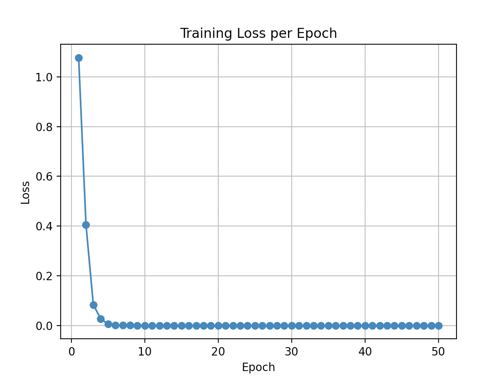
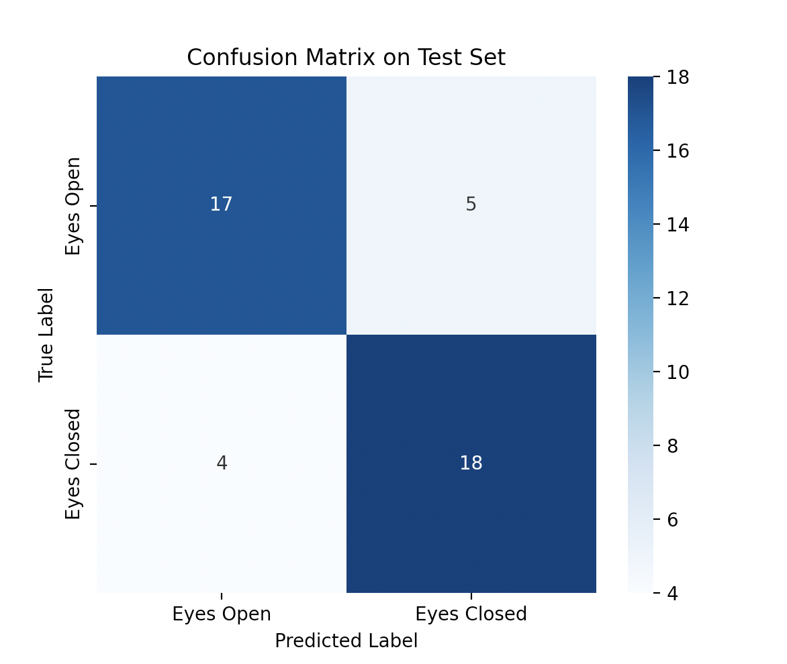
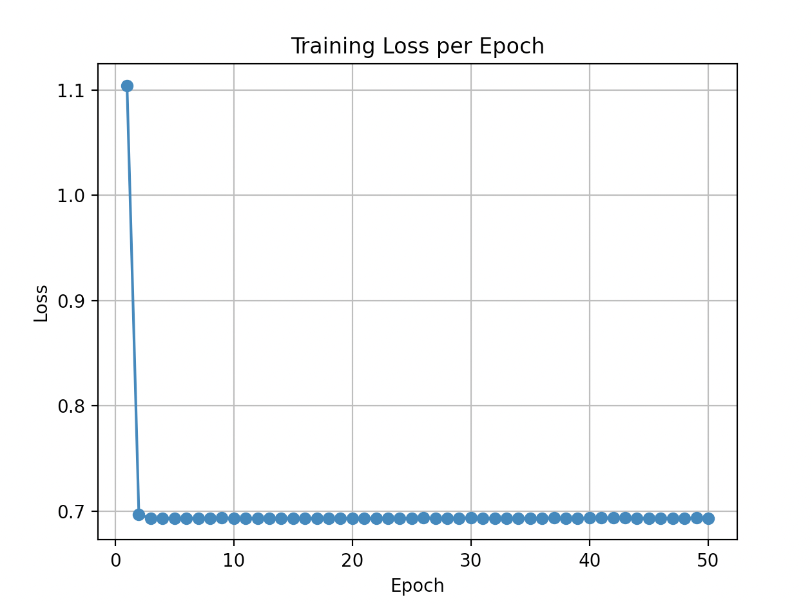
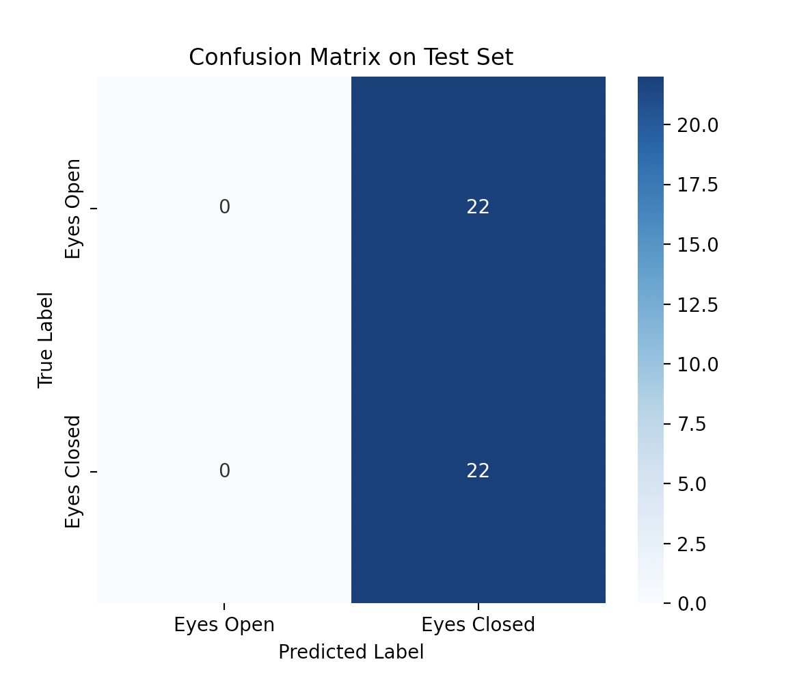

Binary classifier distinguishing Eyes Open from Eyes Closed using a two layer 1D CNN operating on raw 64-channel EEG time series.
No BioSig or MATLAB setup needed, this is pure Python with PyTorch and MNE. This script trains on the Eyes Open and Eyes Closed baselines specifically, so it needs .edf files from EEG_CNN_Dataset_EDF.zip on Zenodo. The .set format dataset will not work here since it does not include the baselines, only the segmented movement classes.
The folder_paths dictionary near the top of the script is hardcoded to one specific machine. Update it to point at your own copies of the Eyes Open and Eyes Closed baseline folders. The script also runs a final inference pass on a held out subject file (file_path, currently pointing at S046R01.edf), so that path needs updating too, to any Eyes Open or Eyes Closed file not used in training.
The simplest possible CNN that can operate on multichannel EEG: two Conv1d layers treating each EEG channel as an input feature map, each followed by ReLU and MaxPool1d downsampling, then two fully connected layers to a 2-class softmax output. The number of post pooling features is computed dynamically by running a zero tensor through the convolutional stack at construction time, making the architecture robust to different input lengths.
class SimpleEEGCNN(nn.Module):
def __init__(self, in_channels, signal_len):
self.conv1 = nn.Conv1d(in_channels, 8, kernel_size=5)
self.conv2 = nn.Conv1d(8, 16, kernel_size=3)
self.pool = nn.MaxPool1d(2)
# Compute flat size dynamically
test = torch.zeros(1, in_channels, signal_len)
x = self.pool(F.relu(self.conv1(test)))
x = self.pool(F.relu(self.conv2(x)))
self.flattened = x.view(1, -1).shape[1]
self.fc1 = nn.Linear(self.flattened, 32)
self.fc2 = nn.Linear(32, 2)The script trains for 50 epochs with Adam and CrossEntropyLoss, collecting per epoch loss for plotting. After training it produces five diagnostic outputs: class distribution bar charts for train and test sets, a sample EEG channel stack for visual inspection, the training loss curve, a confusion matrix on the test set, and a histogram of predicted probabilities for the Eyes Closed class. The final block runs inference on a held out subject and saves the predicted class to JSON.
Eyes Open vs. Eyes Closed is the canonical EEG binary classification task because the two states produce reliably different alpha band power (8–12 Hz). Eyes closed strongly suppresses alpha; eyes open suppresses it further via visual input. A model that cannot distinguish these two states is not learning EEG at all. This baseline establishes that the raw signal CNN pipeline works before adding more classes or complexity.
Per channel z score normalization before loading into the dataset is applied at load time rather than in the Dataset class, so the normalization statistics reflect each individual file rather than a global mean. This is important because absolute EEG amplitude varies considerably across subjects and recording sessions.
50 epochs, lr=0.001, no fixed seed. Accuracy ranged from 50% to 79.55%, mean 70.23%. The 29-point spread is driven by initialization sensitivity — without a fixed seed, one run collapsed to predicting a single class (50%, exactly at chance). Eight of ten runs exceeded 65%, confirming the model reliably learns the alpha suppression signal that separates these two states.
| Metric | Value |
|---|---|
| Best accuracy | 79.55% — Trial 8 |
| Worst accuracy | 50.00% — Trial 3 |
| Mean accuracy | 70.23% |
| Chance baseline | 50.00% |
| Margin above chance (mean) | +20.23 pp |
| Epochs / LR | 50 / 0.001 |




The 70.23% mean across 10 runs is a genuine result — 20 points above chance, consistent in 8 of 10 runs. Eyes Closed suppresses alpha power (~8–13 Hz) while Eyes Open restores it; that is a large, well documented neural signal that even a shallow CNN detects reliably from raw 64-channel EEG. The failure mode in Trial 3 (50%) is a degenerate initialization problem, not a signal problem. Fixing the random seed would make results reproducible and eliminate this variance.
Binary classification works. 70.23% mean on a 50% chance problem is the strongest confirmed result in the project.